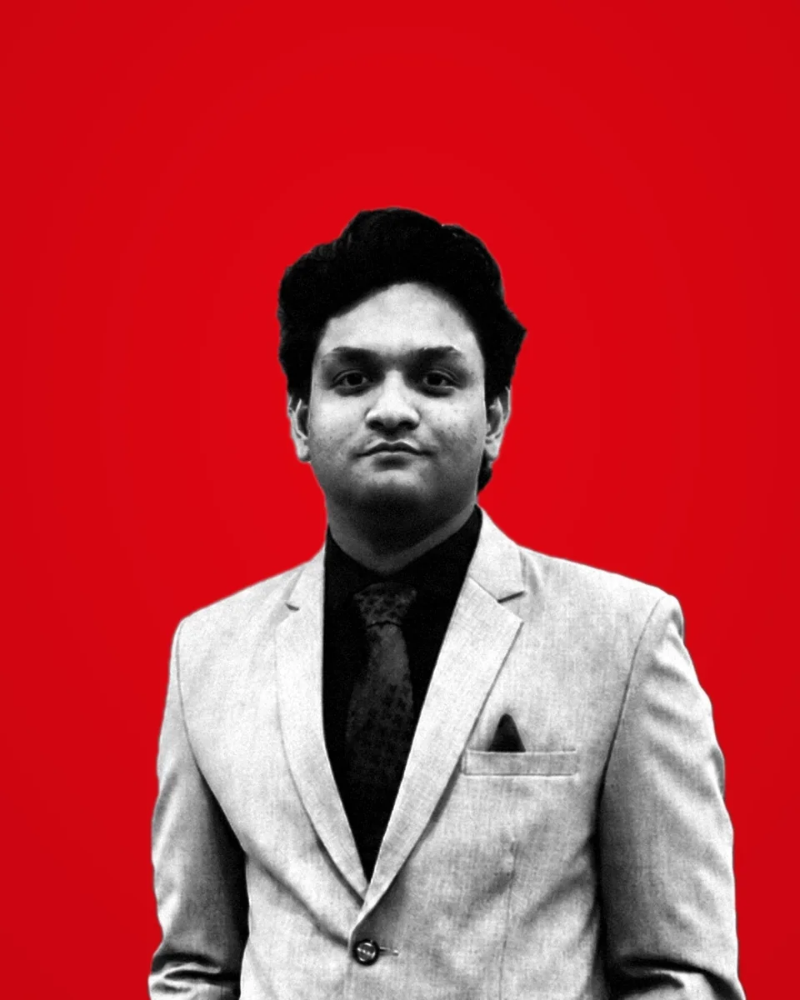
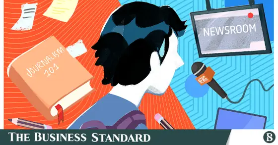
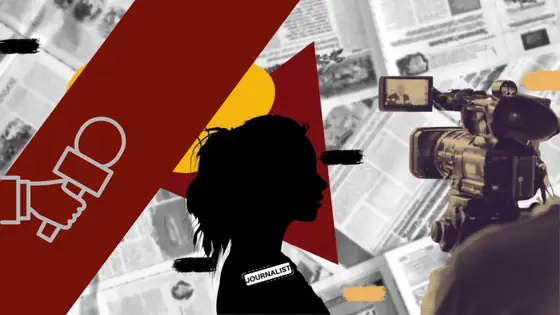
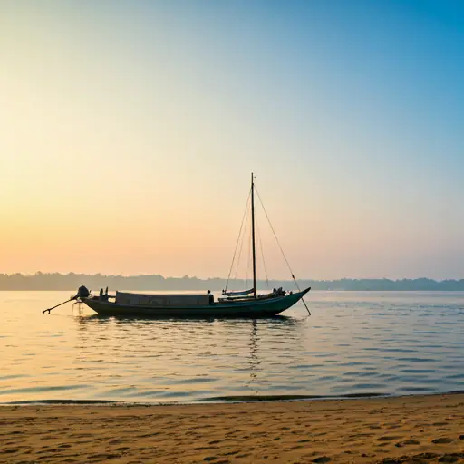

- Lecturer · ULAB
- Media Researcher
- Feature Journalist
Research Interests
- Journalism Studies
- Local Journalism
- Digital Journalism
- Journalism in the Global South
- News and Audience
From the University of Dhaka to newsrooms and research institutions across Dhaka, Usama Rafid has spent a decade at the intersection of teaching, field reporting, and research, asking what it means to practise, study, and teach journalism in Bangladesh.
Field
Notes
Reporting on the state of journalism, media, and communities across Bangladesh.

How Local Journalism Survives on Debt, Pressure and Press Cards
Read feature ↗
Why We Need More Techies in Our Newsrooms
Read op-ed ↗
Living with the River: Manta Communities' Battle Against a Changing Climate
Read feature ↗Projects
& Making
Interactive tools and platforms for teaching and practising journalism in Bangladesh.
Voices
Coastal Voices Bangladesh
A climate journalism platform amplifying the stories of communities on the frontlines of climate change along Bangladesh's coast.
Visit site ↗Newsroom
The Newsroom
A web-based decision-making simulation placing you inside a working newsroom, navigating editorial pressures and publishing deadlines.
Play now ↗Theory Atlas
Media Theory Atlas
An interactive atlas of forty foundational media theories, from the hypodermic needle to the filter bubble, each explored through historical context and a hands-on demonstration.
Explore the atlas ↗Roar Bangla · The Business Standard
in Progress
newsrooms
Collaborate
& Connect
Open to research collaboration on journalism studies, digital journalism, and local journalism practices in the Global South. Academic and press inquiries are welcome at either address below.
rafidusama@gmail.comPress / Personal usama.rafid@ulab.edu.bdAcademic / ULAB